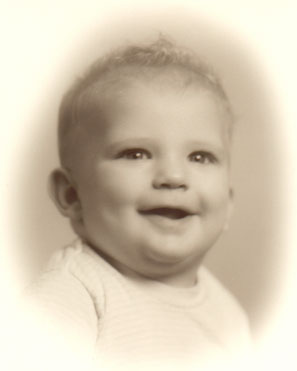
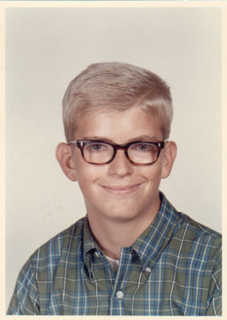
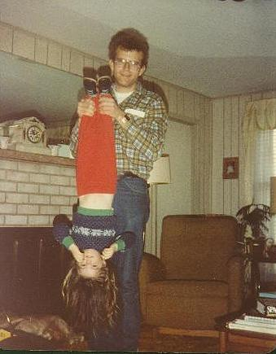

|
 |
Alan Richard Gerber was born January 16th, 1955. Alan was the second child of Ruth and Dick Gerber. |
| He had an elder sister, Beverly, who tortured him ceaselessly as a child. He graduated from the University of Virginia with a Bachelors in Civil Engineering. |
 |
|
 |
Alan enjoyed the company of family greatly, and was saddened when his sister moved with her family to Georgia. |
| Today Alan is president of Air Conditioning Design Co. and lives in Virginia. He works on genealogy as well, and has never married. Alan enjoys taking pictures of flowers with his digital camera, prints of which he sells on the internet. |
Deja Vu in 2002:Alan and Bradley hold Alan's grandnieces Brittan and Alora. |